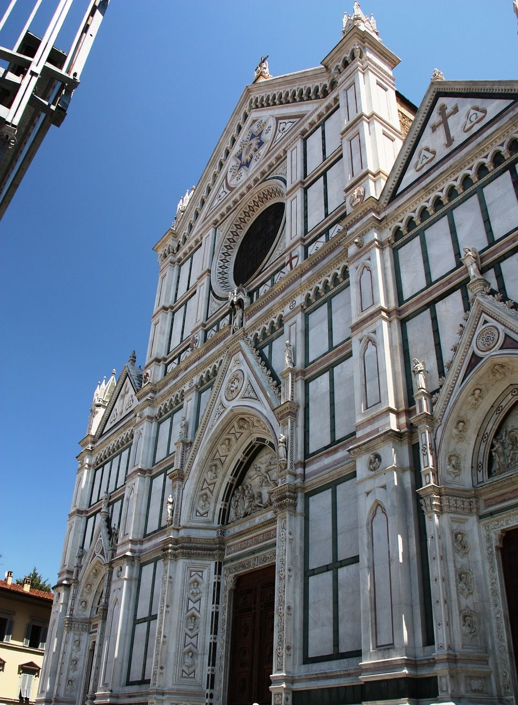
Santa Croce in Florenz ist eine bedeutende Franziskanerkirche, bekannt für ihre prächtige gotische Architektur und als Ruhestätte vieler berühmter Italiener wie Michelangelo, Galileo und Machiavelli.
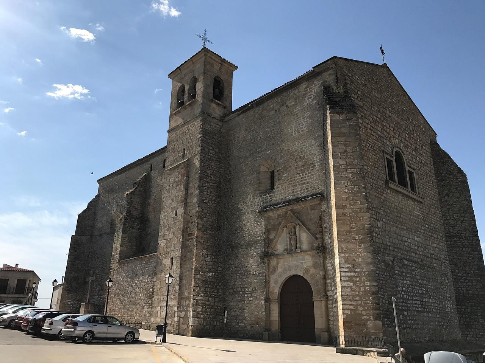
Die Iglesia Parroquial de Santa María la Mayor ist eine historische Pfarrkirche in Spanien, die durch ihre Mischung aus gotischen, Renaissance- und barocken Elementen beeindruckt und oft ein bedeutendes kulturelles sowie religiöses Zentrum ihrer Region darstellt.
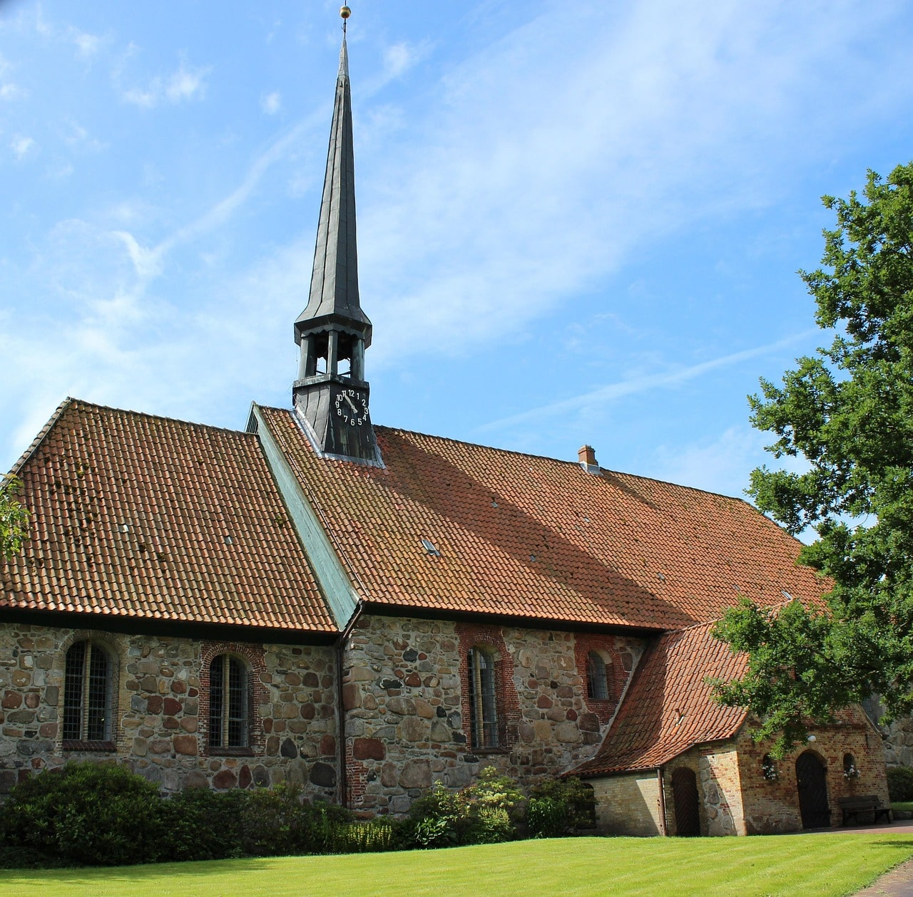
Die Kirche St. Martin in Tellingstedt (Dithmarschen) beeindruckt an ihrer Südostseite mit charakteristischer norddeutscher Backsteinarchitektur und historischer Ausstrahlung.
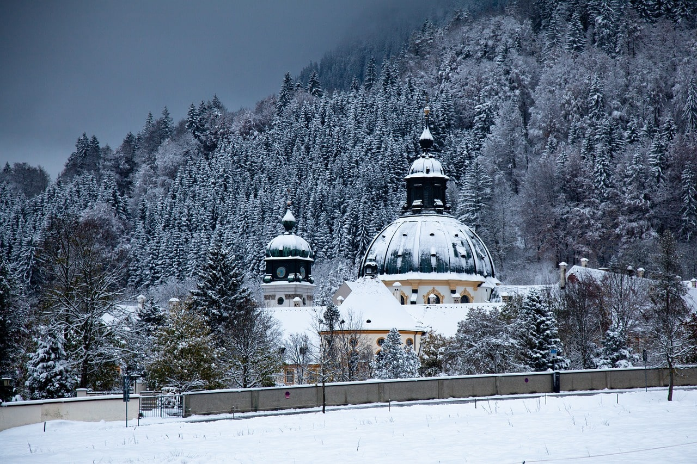
Das Kloster Ettal bildet eine eindrucksvolle barocke Kulisse unweit von Oberammergau, wo jährlich der traditionsreiche König Ludwig Lauf als beliebtes Skilanglauf-Event stattfindet.
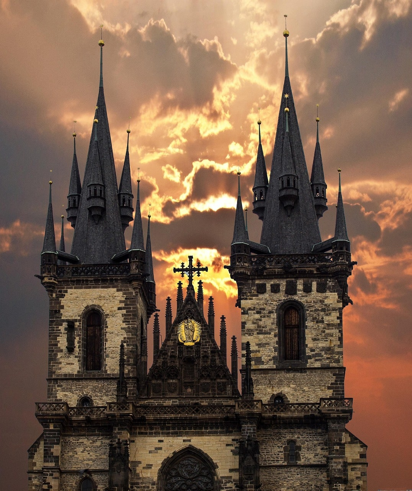
Die Kirche der Jungfrau Maria vor dem Teyn erhebt sich im romantisch-gotischen Stil eindrucksvoll über den Altstädter Ring in Prag, besonders eindrucksvoll bei Sonnenaufgang, wenn ihre detailreiche Fassade in warmem Licht ohne Menschenmengen zur Geltung kommt – ein beliebtes Motiv für lizenzfreie Fotos und Stockbilder.
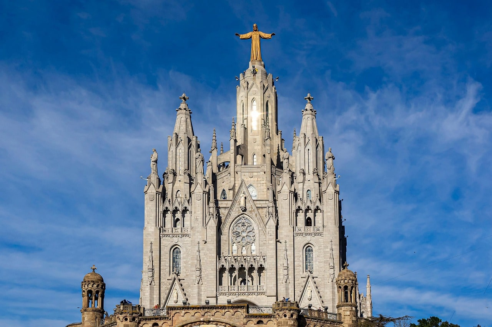
Die Tibidabo-Kirche thront majestätisch auf dem gleichnamigen Berg in Barcelona und bietet mit ihrer neugotischen Architektur und dem Christusstatue-Turm einen spektakulären Ausblick über die Stadt.
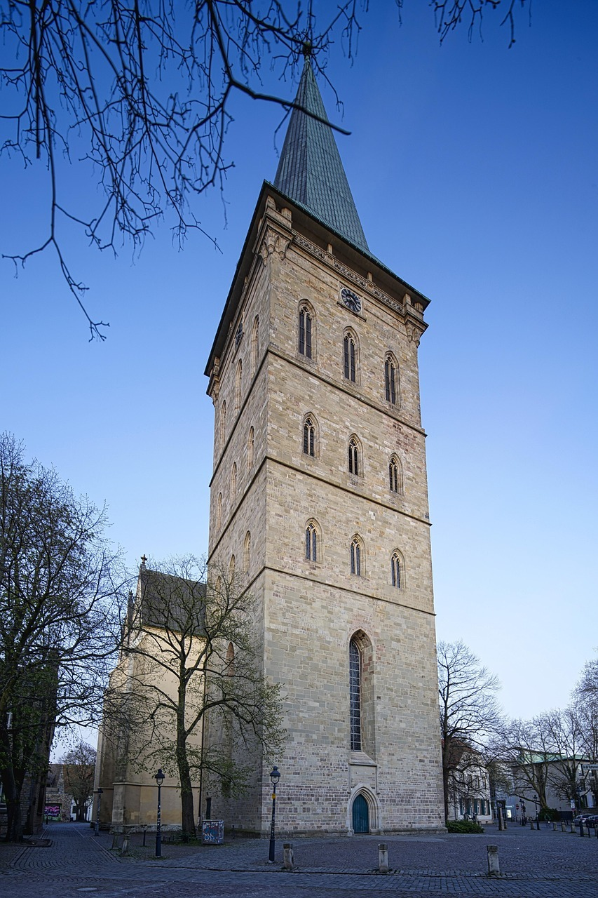
Die St.-Katharinenkirche in Osnabrück ist eine spätgotische Hallenkirche mit dem höchsten mittelalterlichen Turm Westniedersachsens, die seit dem 13. Jahrhundert besteht und heute als bedeutendes historisches Bauwerk für Gottesdienste, Konzerte und Ausstellungen genutzt wird.
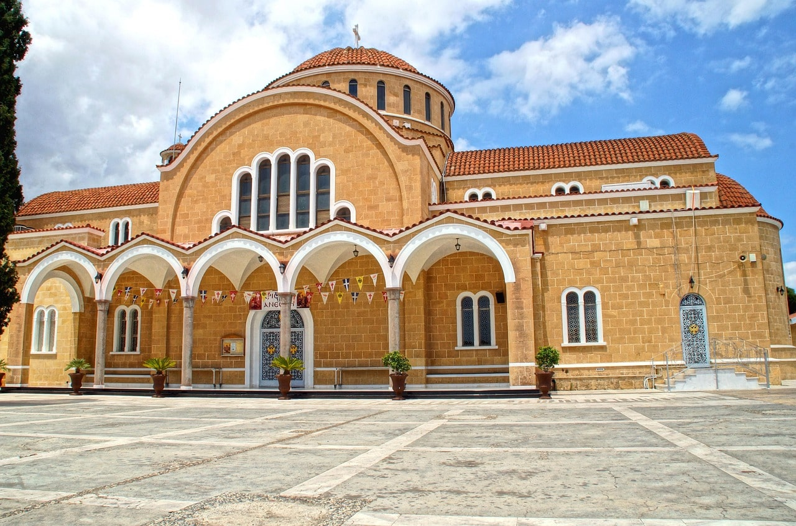
Die Kirche von Agios Georgios in Paralimni, Zypern, ist ein beeindruckendes Gotteshaus mit byzantinischen Elementen, das sich durch ihre hellen Steinfassaden und markanten Kuppeln als spirituelles und architektonisches Zentrum der Stadt auszeichnet.
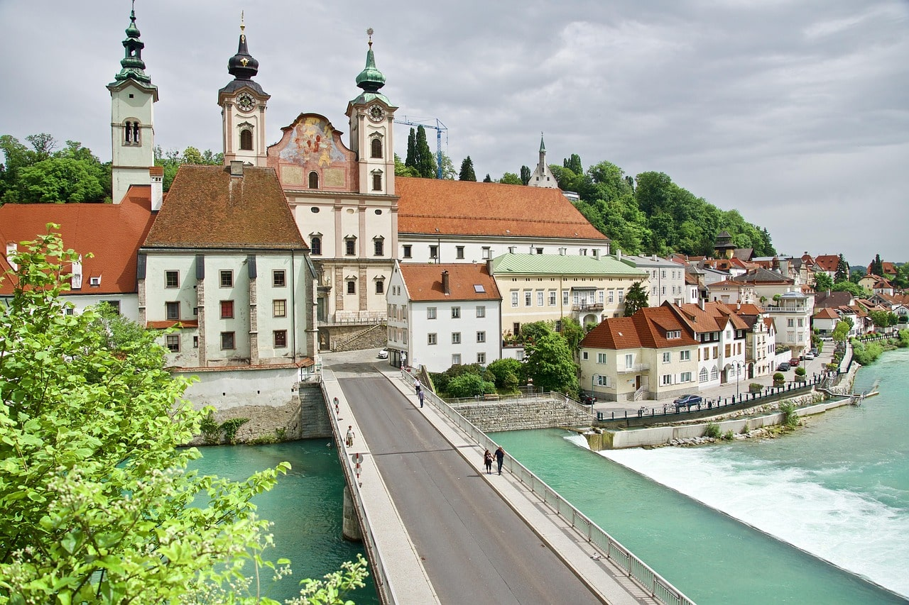
Die Michaelerkirche in Steyr ist eine spätgotische Kirche aus dem 15. Jahrhundert, die durch ihre markante Architektur und ihre historische Bedeutung als Teil des ehemaligen Franziskanerklosters hervorsticht.
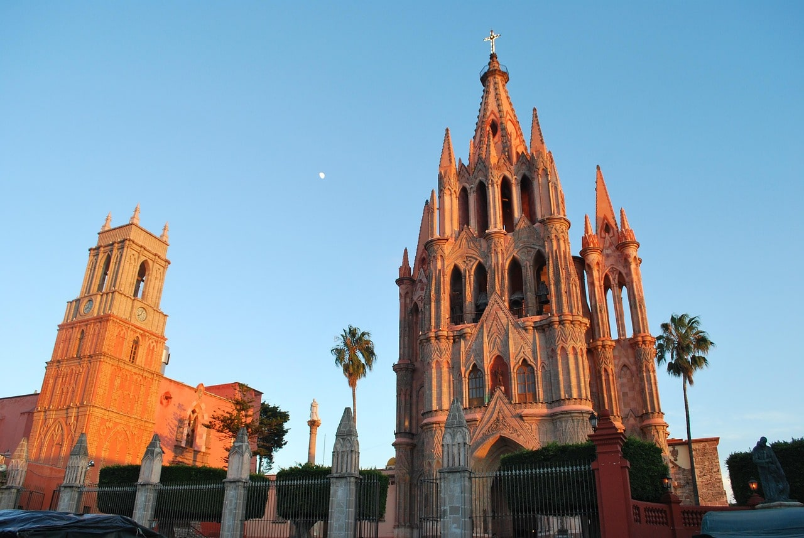
Die Iglesia de San Miguel Arcángel in San Miguel de Allende, Mexiko, ist eine ikonische neugotische Kirche mit rosafarbener Fassade und markanten Türmen, die als Wahrzeichen der Stadt gilt und Touristen wie Gläubige gleichermaßen anzieht.
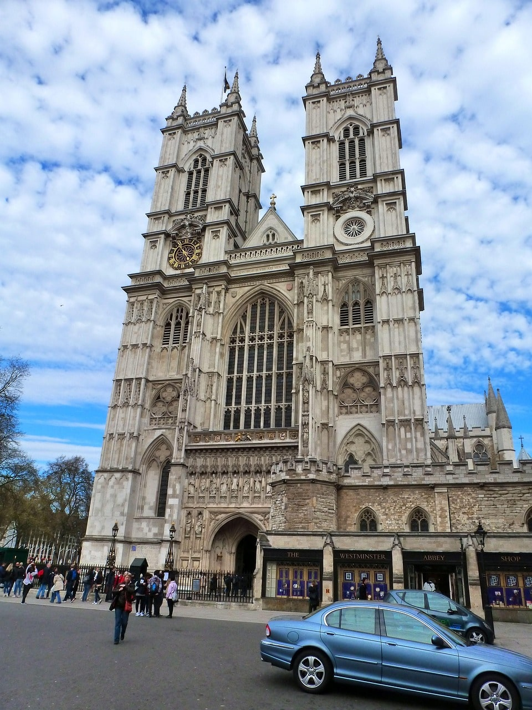
Die Westminster Abbey in London, England, ist eine weltberühmte gotische Kathedrale, die als traditionelle Krönungsstätte britischer Monarchen dient und zugleich ein bedeutendes historisches und kulturelles Wahrzeichen ist.
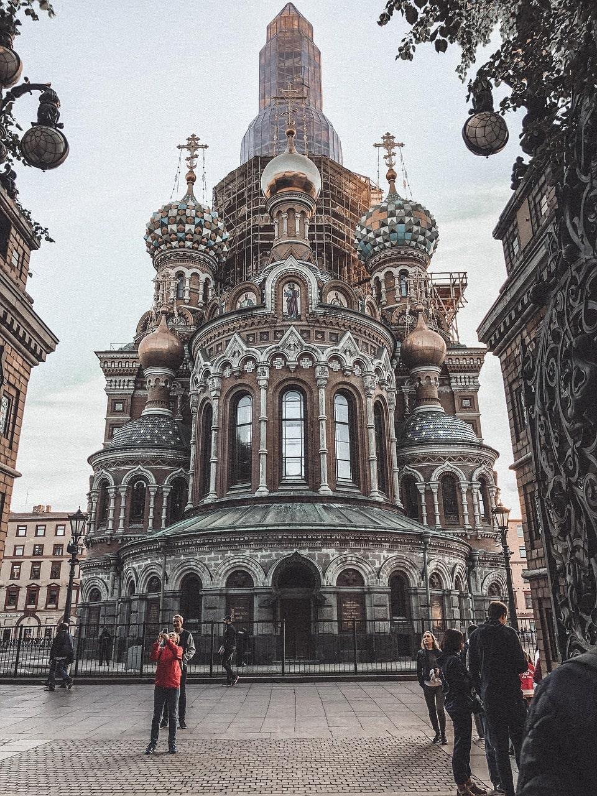
Die berühmte Auferstehungskirche des vergossenen Blutes in Sankt Petersburg ist eine prächtige russisch-orthodoxe Kirche, bekannt für ihre farbenfrohen Zwiebeltürme und als Gedenkstätte an die Ermordung Zar Alexanders II.